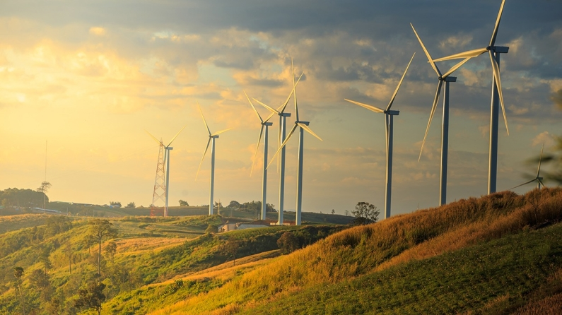
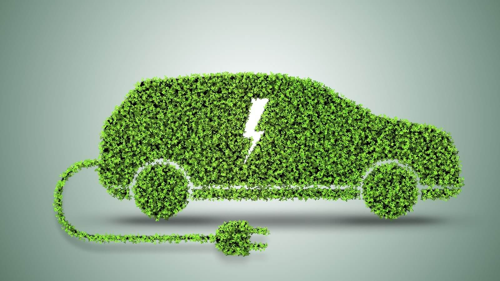

Yeşil Enerji Uygulamaları

Rüzgar Panelleri

Güneş Enerjisi

Websitemizin amacı, insanları çevre dostu uygulamalar ve yeşil enerji kaynakları hakkında bilinçlendirmek ve gelecek nesillere daha temiz bir dünya bırakmaktır.
Sitemizde sürdürülebilirlik ve yeşil enerji ile ilgili güncel bilgilere, makalelere, ipuçlarına ve etkinliklere ulaşabilirsiniz.
Devamını Oku...
Sürdürülebilirlik, doğal kaynakların verimli kullanımı ve çevrenin korunması üzerine odaklanan bir kavramdır. Günümüzde enerji üretimi ve tüketimi, çevresel etkileri nedeniyle büyük bir endişe kaynağı haline gelmiştir. Bu noktada, yeşil enerji kaynakları önem kazanmaktadır. Yeşil enerji, çevreye zarar vermeyen veya minimum düzeyde etkisi olan kaynaklardan elde edilen enerjiyi ifade eder.
Güneş enerjisi, rüzgar enerjisi, hidroelektrik enerji, biyokütle ve jeotermal enerji gibi yenilenebilir enerji kaynakları, sürdürülebilirlik ve yeşil enerji alanında önemli bir role sahiptir. Bu kaynaklar, doğal olarak yenilenebilir olduğu için tükenmezler ve fosil yakıtların aksine çevreye zararlı emisyonlar üretmezler. Yeşil enerji kaynaklarına yapılan yatırımlar, temiz enerji üretimine ve enerji bağımsızlığına katkıda bulunarak iklim değişikliğiyle mücadelede oldukça önemlidir.
Sürdürülebilirlik ve yeşil enerji, çevresel ve ekonomik faydalarının yanı sıra enerji güvenliği ve istikrarı açısından da büyük öneme sahiptir. Yenilenebilir enerji kaynaklarına olan bağımlılığın artması, enerji arzının çeşitlendirilmesini sağlar ve enerji kaynaklarına olan talebi dengeler. Aynı zamanda, yenilenebilir enerji teknolojilerinin geliştirilmesi ve kullanımı, yeşil iş alanlarının oluşmasına ve ekonomik büyümeye katkıda bulunur.
Hidroelektrik enerjisi akan sudan yararlanmak suretiyle elektrik enerjisinin üretilmesi anlamına gelir.
Jeotermal kaynağın bulunduğu bölgelerde, direkt ya da dolaylı olarak elde edilebilen enerji türüdür.
Organik atıklardan anaerobik fermentasyon ile elde edilen, metan içeriği %55-70 arasında değişebilen ısıtma, elektrik üretimi, araç yakıtı gibi farklı alanlarda kullanılabilen bir biyoyakıttır.
Dalga enerjisi, denizlerde oluşan dalgaların yarattığı itme gücünden yararlanan yenilenebilir enerji kaynağıdır.
Hidrojen enerjisi, doğada bileşikler halinde bulunan hidrojenin dönüştürülmesiyle elde edilen enerji kaynağı olarak tanımlanır.
Güneş’in ve Ay’ın Dünya üzerinde uyguladığı kütle çekim kuvvetine bağlı olarak denizlerde ve okyanuslarda oluşturduğu gelgit akıntılarının hareketi etkisiyle oluşan bir kinetik enerjidir.
Harika bir websitesi olmuş. Verdiğiniz bilgiler çok değerli. Sürdürülebilir ve çevre dostu enerji kaynaklarının kullanılması, doğanın korunması ve iklim değişikliğiyle mücadele için kritik bir yol sunar. Yeşil enerjiye yatırım yapmak, temiz bir çevre ve daha sürdürülebilir bir dünya için bir sorumluluk olarak görülmelidir.tus.

İnsanların yeşil enerji hakkında bilgilenmesi dünyamız ve geleceğimiz için gerçekten son derece önemli.
Bu yüzden websitenizi çok faydalı buluyorum. Emeğinize sağlık.
YEŞİL ENERJİ, GELECEĞİN PARLAK VE TEMİZ YOLU.